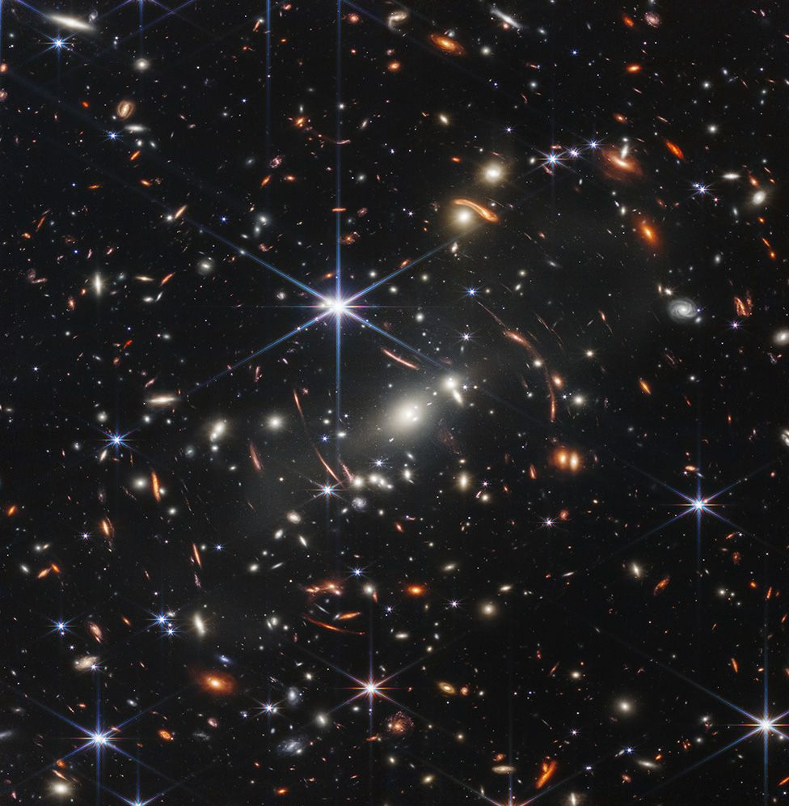
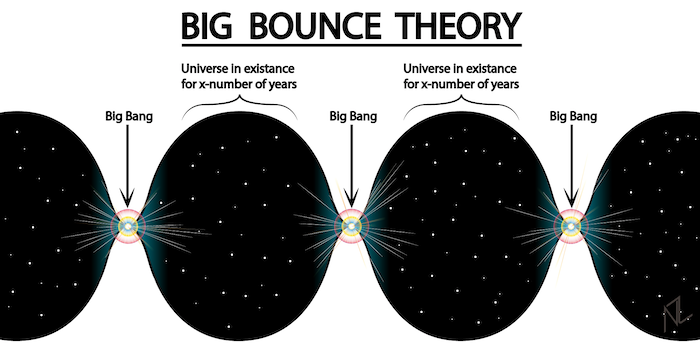
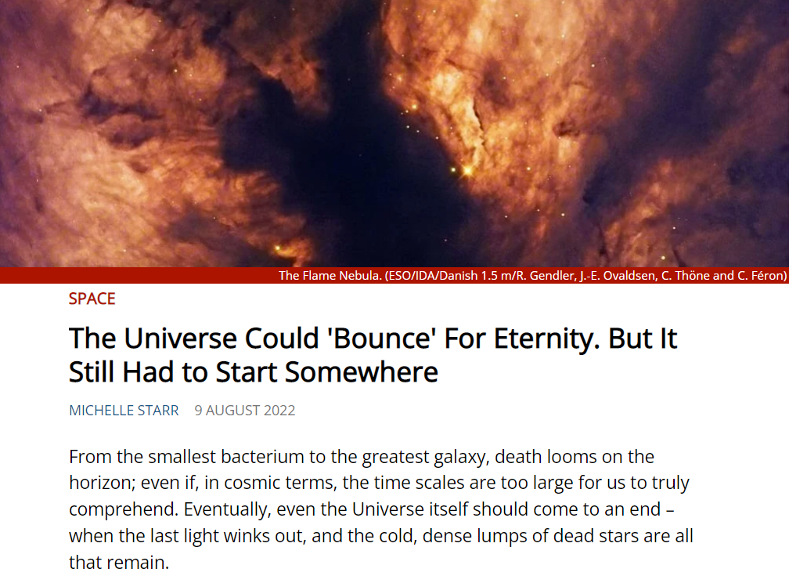
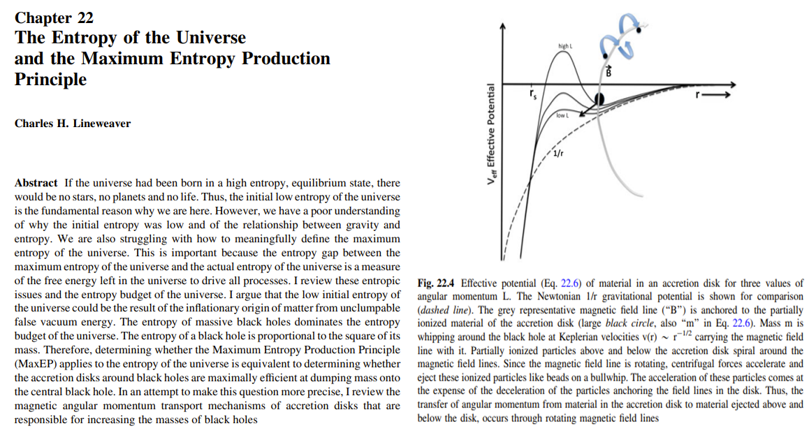

시작과 끝 vs. 윤회 - The Windmills of Your Mind 가사 해설
게시: 2022-09-01T06:30:05+09:00
이번에 제임스 웹 망원경이 보여준 사진은 다시 한번 인생의 덧없음을 보여줍니다. 은하수쪽이 아닌, 우리 눈에는 아무 것도 없는 것으로 보이는 텅빈 하늘을 향해 손을 뻗고 손가락 끝에 작은 모래 알갱이 하나를 얹었을 때 그 알갱이로 가려지는 면적을 확대해보면, 아래 사진과 같이 깜짝 놀랄 정도로 많은 은하계가 보인다는 것을 제임스 웹 망원경이 보여준 것입니다. 대체 이 우주 속에는 얼마나 많은 세계들이 있는 것일까요? 그렇게 무서울 정도로 광활한 우주에 비하면 먼지만도 못해 보이는 인간이라는 존재, 더 나아가 우리 하나하나의 인생은 어떤 의미를 가지는 것일까요?

(이 사진 속에 빛나는 존재들은 별이 아닙니다. 하나하나가 은하계로서, 그 속에 또 무수히 많은 별들이 있습니다. 우리 태양계가 속한 은하계 하나 안에만도 대략 1000억개의 별이 있다고 합니다.) 제 머리로는 이해가 가지 않는 부분이 많아서 수학 못지 않게 성적이 안 좋긴 했지만, 고등학교 때 제가 제일 좋아하는 과목은 지구과학이었습니다. 그 중에서도 가장 저를 매료시킨 부분은 바로 빅뱅 이론이었습니다. 제가 고3 때 보던 대입 수험용 참고서에, 시험에는 나오지 않지만 아마도 그 저자가 꼭 넣고 싶이서 들어간 듯한 주석 하나가 특히 인상 깊었어요. 빅뱅 이후 우주가 계속 팽창만 하는 것인지, 혹은 어느 정도 팽창하다가 태초의 폭발력이 소진되고 중력으로 인해 별들과 은하계가 서로 잡아당기면서 결국 다시 수축하게 될런지에 대해서는 계산에 따라 논쟁이 있다는 대충 그런 내용이었습니다. 이건 나름대로 종교에도 큰 의미를 주는 중대한 이론입니다. 아시다시피 기독교는 직선적인 우주관, 즉 태초에 시작이 있고 언젠가 종말이 있다는 믿음을 가집니다. 빅뱅 이후 우주가 끝없이 팽창하다가 결국 무한대의 엔트로피로 가면서 별이 식고 산산히 흩어져 종말을 맞이하게 된다는 이론에 딱 맞습니다. 그에 반해 불교는 원형적인 우주관을 가집니다. 사람이 죽으면 천국과 지옥으로 끝나는 것이 아니라 다시 환생하여 윤회하쟎아요. 그것처럼 우주가 팽창하다가 팽창력이 다하면 다시 수축하기 시작해서, 엄청난 고밀도로 압축되면 다시 펑~! 또 다른 빅뱅으로 이어지며 우주 자체가 끝없이 윤회한다는 'Big Bounce' 이론도 있습니다.

(요약하면 빅뱅 이론은 우주에 태초의 시작이 있고 언젠가 차가운 죽음이 온다는 것입니다. 그에 비해 빅바운스 이론은 우주가 시작도 끝도 없이 팽창과 수축을 반복한다는 것입니다.) 저는 종교에서 자연과학의 의미가 굉장히 중요하다고 생각합니다. 특히 자연과학을 무시하고 오로지 성경에 쓰인 글자만을 믿어야 한다는 개신교 사람들을 보면 의아하게 생각되는 것이, 하나님이 이 우주를 창조하셨다고 믿으면서 정작 하나님께서 우주에 직접 써놓으신 그 원리와 법칙에 별 관심이 없다는 것은 말이 안 된다고 생각합니다. 저는 성경을 누가 어떻게 썼는지 또 누가 어떤 의도와 편견을 가지고 편집과 번역을 했는지에 대해서는 확신이 없지만, 이 우주 자체는 정말 하나님이 뭔가 뜻을 이루시기 위해 만드셨다고 믿습니다. 그러니 이 우주가 결국 끝없는 팽창을 하다가 영원한 죽음으로 가는지 아니면 결국 다시 수축하여 다시 빅뱅을 일으키는지 여부는 굉장히 중요한 의미를 가진다고 봅니다. 물론 매우 제한적인 관찰 결과와 (신에 비하면) 제한적인 두뇌로 계산해야 하지만, 저와는 비교가 안 될 정도로 똑똑하신 천체 물리학자들은 바로 그런 것을 연구하고 있고, 그 분들의 계산 결과에 따라 직선적인 우주관이 맞는지 원형적인 우주관이 맞는지 결정이 나게 됩니다. 종교적 진리가 목사님들의 설교가 아니라 천체 물리학자분들의 계산 결과에 따라 갈리는 것이니 목사님들로서는 자존심 상하는 일일 수도 있고 영역 침해라는 불만도 있을 수 있겠으나, 저는 그 진리를 믿습니다. 다행인지 불행인지 아직까지는 확고한 이론이나 계산에 의한 그 증명이 없나 봅니다. 최근에 이런 기사를 보았습니다. https://www.sciencealert.com/eternal-bouncing-universes-still-have-to-start-somewhere

요약하면 현재까지의 주된 이론은 직선적인 우주관, 즉 우주는 영원히 팽창하다 차가운 죽음을 맞이하게 된다는 것입니다. Big Bounce 이론보다는 Big Bang 이론이 더 맞는 이유는 어찌 보면 단순합니다. 우주의 엔트로피는 결국 계속 증가해야 하는데, Big Bounce 이론에서 주장하는 것과 같이 팽창과 수축이 반복된다면 우리가 살고 있는 지금 이 우주가 빅뱅을 일으켜 팽창을 시작할 때 이미 엔트로피가 엄청나게 높았어야 합니다. 그런데 그렇지 않았다는 것이지요. 그러므로 Big Bounce 이론은 시작부터 잘못 되었다는 주장이 있습니다. https://www.mso.anu.edu.au/~charley/papers/Chapter22Lineweaver.pdf


(저는 대체 뭔 소리를 하는 것인지 전혀 이해를 못하겠습니다.) 그러나 최근에 원형적인 우주관, 즉 Big Bounce 이론에도 뭔가 저는 이해하지 못하는 새로운 모델이 제시되어 기존의 허점을 꽤 그럴싸하게 보완했다는 평가를 받은 모양인데, 이론 물리학자들에 따르면 그 새로운 Big Bounce 모델에도 여전히 제약 사항이 있다고 합니다. 원래 Big Bounce 이론이 주장하는 바의 핵심에는 이 우주에는 시작도 없고 끝도 없다는 주장이 있는데, 저는 이해 못하지만 아무튼 Big Bounce가 사실이라고 해도 태초에 시작점은 있어야 한다는 것이지요. 즉, 이론상으로도 신은 실존한다는 것입니다. 물론 그 신이 교회에 십일조 안 내면 지옥에 보내겠다고 협박하는 존재냐는 것은 다른 이야기입니다. 이 Big Bang vs. Big Bounce 논쟁을 읽으면서 생각나는 노래가 있습니다. 바로 The Windmill of Your Mind, 그대 마음 속의 풍차입니다. 제목만 보면 뭔가 목가적인 사랑 노래 같은데, 이미 다들 한번쯤은 들어보셨을 멜로디의 이 노래는 멜로디도 그렇고 가사 자체가 굉장히 처연하고 절실한 무언가를 담고 있습니다. 가사가 꽤 어려워요. 제가 이 가사에서 받은 느낌은 계속 원을 그리는 무엇인가를 나열하면서, 그것이 사랑이건 인생이건 언젠가는 끝나야 하는 덧없는 것에 대한 아쉬움을 노래한다는 것이었습니다. 노래 가사를 보면 원을 그리며 영원히 도는 것과 함께, 곧 사라질 덧없는 것, 가령 모래 해변 위의 연인들의 발자국 같은 것을 대비하고 있습니다. 특히 'Never ending or beginning on an ever spinning reel'라는 부분은 '끝이 없는 것은 시작도 없다'라는 간단한 명제와 함께 저 Big Bounce 이론의 허점을 가리키는 것 같기도 합니다. 그리고 'And the world is like an apple whirling silently in space'라는 부분에서는, 한때 우리가 전체 우주의 중심이라고 생각했던 이 좁쌀만한 세계가 얼마나 공허하고 의미없는 것인지를 한탄하는 것 같기도 하고요. 만약에 사랑이 없다면 말이지요. 이 공허한 우주와 인생에 의미가 있는 것은 결국 사랑이 있기 때문 아니겠습니까? 이 노래는 원래 1968년 스티브 맥퀸과 페이 더너웨이 주연의 범죄-로맨스 스릴러 The Thomas Crown Affair에 삽입된 오리지널 영화 음악입니다. 작곡은 프랑스인 미쉘 르그랑(Michel Legrand)이 맡았고, 작사는 당시 인기 작사가였던 Alan Bergman - Marilyn Bergman 부부가 맡았습니다. 먼저 르그랑이 멜로디를 만들었고, 버그만 부부가 그 멜로디 몇 소절을 들어보고는 작사를 했다고 합니다. 개인적으로는 영화 속 장면과 가사가 잘 맞는 것 같지는 않아요. 저는 이 노래 가사가 잘은 모르겠지만 꽤 심오한 내용을 담고 있다고 생각했는데, 어떤 영국 시인의 평론에 따르면 겉만 번지르하고 알맹이가 없는 좋지 않은 가사라고 합니다. 자기는 학생들에게 이 가사를 졸작의 반면 교사로 삼고 있다고 하네요. 그건 잘 모르겠으나 실제로 이 영어 가사는 반복되는 가사와 그렇지 않은 가사, 그리고 영원한 원 vs. 덧없는 존재라는 대비를 그다지 완벽하게 그려내고 있지는 못합니다. 이 노래는 프랑스인이 작곡을 하다 보니, 프랑스어 가사도 따로 있습니다. 프랑스어 가사에는 영원한 원 vs. 덧없는 존재라는 대비가 별로 드러나 보이지는 않는데, 대신 가사 하나하나가 매우 예쁩니다. 가령 Sur des forêts de Norvège, sur des moutons d'océan 부분은 정말 아름답지요. 그런데... 불어 버전은 그냥 예쁜말 대잔치로 끝나는 것이 좀 아쉽긴 합니다. 이 노래의 오리지널 사운드트랙은 우리에겐 잘 알려지지 않은 영국 배우가 불렀는데 영 아니올시다입니다. 영어 버전은 바브라 스트라이젠드, 불어 버전은 프리다 보카라가 부른 것을 추천드립니다. 특히 프리다 보카라의 불어 버전은 꼭 들어보세요. 정말 노래가 좋습니다. https://youtu.be/cxPp-wRxNoc

The Windmills of Your Mind (그대 마음의 풍차) Round like a circle in a spiral, like a wheel within a wheel Never ending or beginning on an ever spinning reel 동그라미 속의 원처럼, 바퀴 속의 바퀴처럼 영원히 돌아가는 실타래처럼 끝도 없고 시작도 없이 Like a snowball down a mountain, or a carnival balloon Like a carousel that's turning running rings around the moon 산비탈을 구르는 눈덩이처럼, 혹은 축제의 기구처럼 달 주변을 도는 회전목마처럼 Like a clock whose hands are sweeping past the minutes of its face And the world is like an apple whirling silently in space 시계판의 숫자들을 휩쓸고 지나가는 시계 바늘처럼 그리고 세상은 허공 속에 조용히 돌아가는 사과 같은 것 Like the circles that you find in the windmills of your mind! 그대 마음 속 풍차 속에 보이는 동그라미처럼 Like a tunnel that you follow to a tunnel of its own Down a hollow to a cavern where the sun has never shone 그대가 들어가는 터널 속에 이어지는 또 다른 터널처럼 한번도 태양이 비춘 적 없는 동굴 속 텅빈 공간 속에 Like a door that keeps revolving in a half forgotten dream Or the ripples from a pebble someone tosses in a stream 반쯤 잊어버린 꿈 속에서 돌아가는 회전문처럼 혹은 누군가 냇물 속에 던진 자갈에서 퍼져나가는 물결처럼 Like a clock whose hands are sweeping past the minutes of its face And the world is like an apple whirling silently in space 시계판의 숫자들을 휩쓸고 지나가는 시계 바늘처럼 그리고 세상은 허공 속에 조용히 돌아가는 사과 같은 것 Like the circles that you find in the windmills of your mind! 그대 마음 속 풍차 속에 보이는 동그라미처럼 Keys that jingle in your pocket, words that jangle in your head Why did summer go so quickly, was it something that you said? 그대 주머니 속에 쩔렁이는 열쇠들, 그대 머리 속에 울리는 단어들 왜 그리 여름은 빨리 갔나라는 것이 그대가 한 말이었던가? Lovers walking along a shore and leave their footprints in the sand Is the sound of distant drumming just the fingers of your hand? 연인들이 해변을 걸으며 모래에 발자국을 남기네 이건 멀리서 들려오는 북소리인가 그대의 손가락이 내는 소리인가? Pictures hanging in a hallway and the fragment of a song Half remembered names and faces, but to whom do they belong? 복도에 걸린 그림들, 노래의 단편들 반쯤 기억하는 이름들과 얼굴들, 하지만 그게 누구였더라? When you knew that it was over you were suddenly aware That the autumn leaves were turning to the color of her hair! 이제 끝인 것을 알았을 때, 그대는 불현듯 깨달았지 가을 잎들이 그녀의 머리칼 색으로 변했다는 것을 Like a circle in a spiral, like a wheel within a wheel Never ending or beginning on an ever spinning reel 동그라미 속의 원처럼, 바퀴 속의 바퀴처럼 영원히 돌아가는 실타래처럼 끝도 없고 시작도 없이 As the images unwind, like the circles that you find In the windmills of your mind! 이미지들이 흘러나오며 그대 마음 속 풍차 속에 보이는 동그라미처럼 https://youtu.be/8E5EfDsJxAU
Les Moulins de Mon Coeur (내 마음 속 모든 풍차) Comme une pierre que l'on jette dans l'eau vive d'un ruisseau Et qui laisse derrière elle des milliers de ronds dans l'eau 흐르는 냇물에 누군가 던진 자갈처럼 그리고 거기서 나오는 수많은 동그라미 물결처럼 Comme un manège de lune avec ses chevaux d'etoiles Comme un anneau de Saturne, un ballon de carnaval 별의 말들이 있는 달의 회전목마처럼 토성의 테, 축제의 기구처럼 Comme le chemin de ronde que font sans cesse les heures Le voyage autour du monde d'un tournesol dans sa fleur 시간이 끊임없이 만들어내는 동그라미 골목길처럼 꽃잎 속 해바라기가 세상을 도는 것처럼 Tu fais tourner de ton nom tous les moulins de mon cœur 그대는 내 마음 속 모든 풍차를 그대 이름으로 돌리네 Comme un écheveau de laine entre les mains d'un enfant Ou les mots d'une rengaine pris dans les harpes du vent 아이 손에 엉켜버린 양털 타래처럼 혹은 바람의 하프에 울리는 노랫말처럼 Comme un tourbillon de neige, comme un vol de goélands Sur des forêts de Norvège, sur des moutons d'océan 노르웨이의 숲 위 눈보라처럼 대양의 하얀 파도 위를 나는 갈매기처럼 Comme le chemin de ronde que font sans cesse les heures Le voyage autour du monde d'un tournesol dans sa fleur 시간이 끊임없이 만들어내는 동그라미 골목길처럼 꽃잎 속 해바라기가 세상을 도는 것처럼 Tu fais tourner de ton nom tous les moulins de mon cœur 그대는 내 마음 속 모든 풍차를 그대 이름으로 돌리네 Ce jour-là près de la source Dieu sait ce que tu m'as dit Mais l'été finit sa course, l'oiseau tomba de son nid 샘 근처 그 날 그대가 한 말을 누가 알까 하지만 여름은 끝나고 새는 둥지에서 떨어졌네 Et voilà que sur le sable nos pas s'effacent déjà Et je suis seul à la table qui résonne sous mes doigts 이제 해변의 우리 발자국은 벌써 지워져가고 나는 홀로 앉아 테이블에 손가락을 두들기고 있어 Comme un tambourin qui pleure sous les gouttes de la pluie Comme les chansons qui meurent aussitôt qu'on les oublie 빗방울에 소리를 내는 탬버린처럼 잊혀지는 순간 죽어버리는 노래들처럼 Et les feuilles de l'automne rencontrent des ciels moins bleus Et ton absence leur donne la couleur de tes cheveux 가을 잎이 덜 푸른 하늘을 만날 때 그대가 없으니 잎 색깔이 그대 머리칼 색으로 변했네 Comme une pierre que l'on jette dans l'eau vive d'un ruisseau Et qui laisse derrière elle des milliers de ronds dans l'eau 흐르는 냇물에 누군가 던진 자갈처럼 그리고 거기서 나오는 수많은 동그라미 물결처럼 Aux vents des quatre saisons, tu fais tourner de ton nom Tous les moulins de mon cœur 사계의 바람 속에서, 그대는 그대 이름으로 돌리네 내 마음 속 모든 풍차를